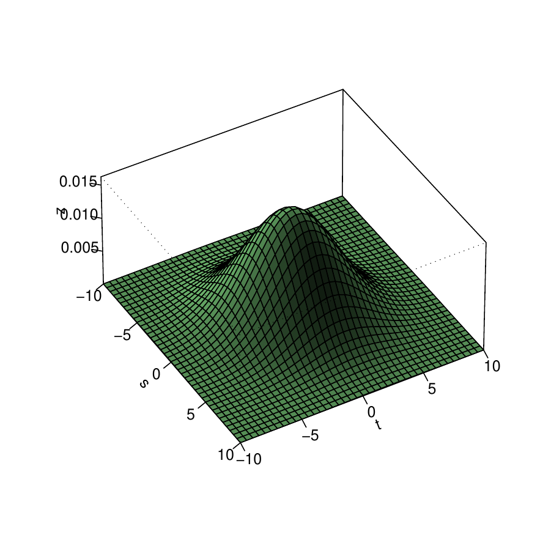
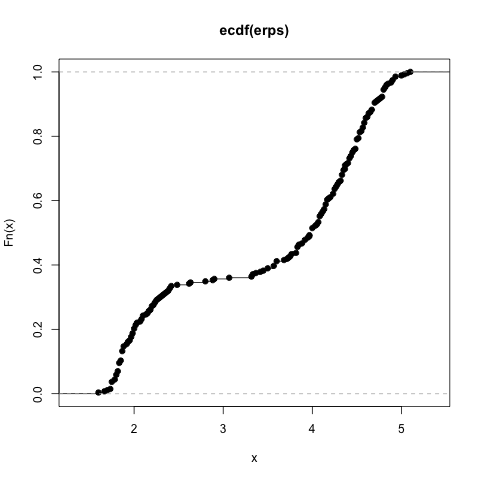
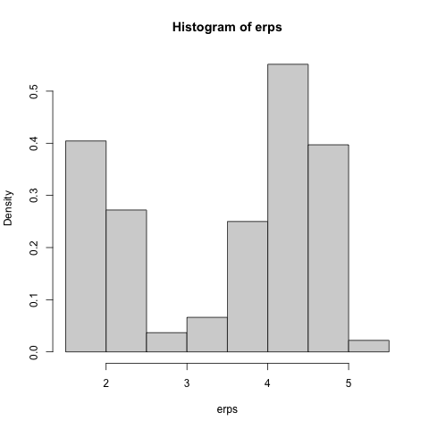
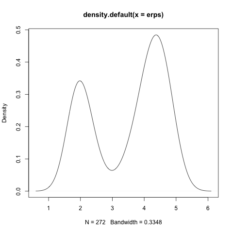
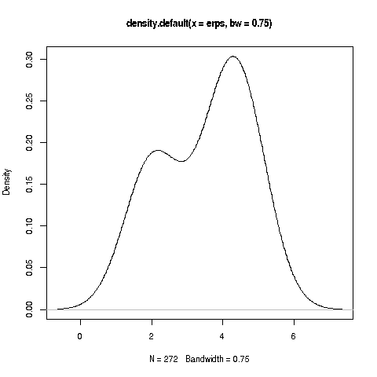
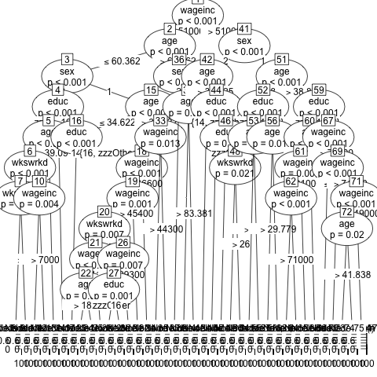
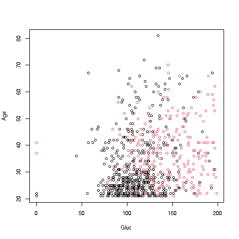
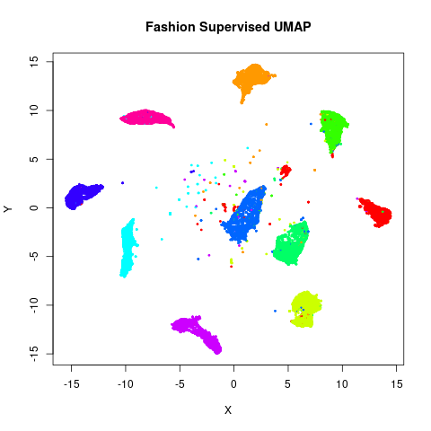

All of REAL Statistics
Fast Track to Stat for Those with Probabilty Background

(Above image source unknown. See notice at the end of this document regarding copyright of the document.)
WHO IS THIS FOR?
Students in computer science, engineering, mathematics and the like typically take a course in calculus-based probability – unconditional and conditional probability, cdfs and density functions, expected value and so on. (The material is in Chapters 1-9 of my online book.) But later they have a need to use statistics, and find it’s a broader and more nuanced field than they had realized.
This document will enable such people to quickly acquire the needed concepts, with a good intuitive understanding. It is modeled after my popular fasteR tutorial for quickly becoming proficient in R.
By the way, the title, “All of REAL Statistics,” is a play on the titles of two excellent books, All of Statistics and All of Nonparametric Statistics, by one of my favorite statisticians, Larry Wasserman. Both books are quite thin, making their “All of” titles ironic. Well, my short tutorial here is even more “all of” in that sense.
What Is Really Going on in Statistics?
Professional statisticians, especially Statistics professors, may find the presentation here to be a familiar story – but with an odd plot, a different cast of characters, and a different ending. :-) It will be the standard material, but viewed a broader contexts, especially real world practice.
Indeed, many of readers of this tutorial will be surprised to see that it does not contain many equations. But sadly, many people know the mechanics of statistics very well, without truly understanding on intuitive levels what those equations are really doing, and this is our focus.
For instance, consider estimator bias. Students in a math stat course learn the mathematical definition of bias, after which they learn that the sample mean is unbiased and that the sample variance can be adjusted to be unbiased. But that is the last they hear of the issue. Actually, most estimators are in fact biased, and lack “fixes” like that of the sample variance. Does it matter? None of that is discussed in textbooks and courses.
We will indeed do some math derivations here, but not at the outset, and not highlighted. This tutorial aims to explain the practical ISSUES. Many of these are rather generally known, but not written down in books. Some are actually not widely known. And some are entirely new ways of looking at familiar statistical concepts and properties.
Lesson SAMPLING: the Notion of a Sample
We’ve all heard the term margin of error in an opinion poll. It will be discussed in detail in a later lesson, but what question is it addressing?
Say the poll consists of querying 1200 people, which is common in polls. These were drawn randomly from some list, say a list of phone numbers. We ask each one, “Do you favor Candidate A?” The point is that if we were to do this again, we would get 1200 other people, and the percentage saying Yes to our question would change. Thus we want to have some idea as to how much our Yes percentage varies from one sample of 1200 people to another.
Let’s set some notation. Say we are interested in some quantity X, say human height. We take a sample of n people from a given target population, and denote the value of X in the ith person in our sample by Xi. If we sample with replacement (or if n is small relative to the total population size), the Xi are independent random variables. Also, each Xi has distribution equal to that of the sampled population. If, say 22.8% of people in this population are taller than 70 inches, then P(Xi > 70) = 0.228.
So, X1,…,Xn are independent, identically distributed random variables (iid).
Lesson NORMALETC: the Role of Normal (Gaussian) and Other Parametric Distribution Families
In the last lesson, we talked about the distribution of X in the population. Although the population is finite (more on this below) and thus X is a discrete random variable, one often models X as continuous, with its distribution being in the normal family.
Why do this?
Histograms of X in many applications do look rather bell-shaped. This may in turn be due to the Central Limit Theorem (CLT). The CLT says that sums are approximately normal, and in the human height case, one can think of the body as consisting of chunks whose heights sum to the height of the person. (The CLT assumes i.i.d. summands, and the chunks here would be neither independent nor indentically distributed, but there are non-i.i.d. versions of the CLT.)
The early developers of statistics had no computers, and it turns out that the normal distribution family is quite mathematically tractable, thus amenable to closed-form “exact” solutions.
It is often the case in math that discrete quantities are approximated by continuous ones (also vice versa).
A normal distribution is determined by two parameters, the mean and variance of the distribution. Without that assumption, we have many parameters, essentially infinitely many. Let Fx be the cdf of X, i.e. FX(t) = P(X ≤ t). Well, there are infinitely many possible values for t, thus infinitely many values of FX(t). But if we assume X is normal, those infinitely many values are all expressible in terms of just two numbers. We are then essentially estimating two numbers instead of infinitely many. This is often a very useful approximation.
Another popular model is the exponential distribution family. You probably learned in your probability course that it is “memoryless,” which makes it a suitable model in some applications.
Note that, as models, these are necessarily inexact. No distribution in practice is exactly normal, for instance. No one is 900 feet tall, and no one has a negative height. For that matter, a normal distribution is continuous, whereas X is discrete, for two reasons:
We are sampling from a finite population.
Our measuring instruments have only finite precision. If, say, X is bounded between 0 and 10, and is measured to 2 decimal places, X can take on 1000 values, and thus is discrete.
But what are we estimating, in light of the fact that our model is only approximate? Say for instance we model X as having a gamma distribution. Then in some sense, depending on how we estimate, we are estimating the gamma distribution that is closest to our true population distribution.
Lesson CONCEPTPOPS: Conceptual Populations
In the opinion poll example, it is clear as to which population is sampled. In many applications, the issue is more conceptual. If for instance we run a clinical trial with 100 diabetic patients, we might think of them as having been sampled from the population of all diabetics, even though we did not actually select the patients in our sample, whether randomly or otherwise.
This issue can become quite a challenge in, say, economic analysis. If we have 10 years of annual data, i.e. n = 10, what population is that a “sample” from?
Accordingly, in many applications, the population we model as being sampled from is largely conceptual rather than a tangible entity.
Say we have 1200 patients in a clinical trial of a drug for treating hypertension. Then our sample might be considered as a random sample of the population of all sufferers of hypertension, but this may be an oversimplification. Serious consideration should be given to the implications of our sampling method on the definition of the sampled population.
Lesson STDERRS: Standard Errors
Earlier we mentioned the “margin of error” in reporting the results of opinion polls. To make that notion concrete, let’s first discuss a related idea, standard errors.
We use our data X1,…,Xn to estimate some quantity of interest, say the proportion q of people in the population who would answer Yes to our poll if we had a chance to ask them all. Our estimate, Q, would be the proportion of people in our sample who say Yes.
We want to have some measure of how much Q varies from one sample to another. Of course, Var(Q) is such a measure.
Say for now that the average of Q, averaged over all possible samples, is q. For some samples, Q > q, for others Q <- q, but on average we get q. This relates to the issue of bias, which we will turn to later, but for now, say we have this situation, i.e. EQ = q.
The key point: If Var(Q) is small, then Q doesn’t vary much from one sample to another, and if EQ = q, then for “most” samples, Q should be near q. That is exactly what we hope for! We only have one sample, of course, but if we know that Q is usually near q, we feel reasonably confident that the q from our particular sample is near q.
Of course, the square root of any variance is called the standard deviation. In the case of an estimator, Q here, we use the term standard error. In some cases, it will be only the approximate standard deviation, in a sense to be seen later.
Lesson BIAS: Bias, and Impact on Standard Errors
In our last lesson, we assumed that EQ = q. We say that Q is an unbiased estimator of q. In English: The average value of Q over all possible samples is q.
In the above example, in which Q is the sample proportion of Yes’s and q is the correspondng population proportion, it does turn out that Q is unbiased. In fact, any sample mean is an unbiased estimator for the population mean. Let’s skip the derivation for now (we’ll have a derivations lesson later), so we can get to the larger issues.
Unbiasedness at first seems to be a very desirable property. It does hold for some classical statistical methods, but does not hold for most others, one of which is the sample variance, as follows.
Say we wish to estimate the population variance σ2. Note that
\[ Var(X_{i}) = \sigma^2 \]
And recall that also
\[ EX_{i} = \mu \]
the population mean. Note too that we are not necessarily assuming a normal distribution.
In the population, that is the average squared difference between the data and their mean. The sample analog is
\[ S^{2} = \frac{1}{n} \sum_{i=1}^n (X_i - \bar{X})^2 \]
where \(\bar{X}\) is the sample mean,
\[ \bar{X} = \frac{1}{n} \sum_{i=1}^n X_i \]
Note especially the word analog above. Here is the analogy:
- σ2 is the average squared distance of X, in the population, to the population mean:
\[ \sigma^2 = E[(X - \mu)^2] \]
- S2 is the average squared distance of X, in the sample, to the sample mean.
It can be shown that S2 is biased downward:
E(S2) = [(n-1) / n] σ2
The average value of S2 over all samples is a little too low. The amount of bias is
E(S2) - σ2 = -1/n σ2
This is usually tiny, but it bothered the early developers of statistics, who then adjusted the definition of sample variance to
\[ s^2 = \frac{1}{n-1} \sum_{i=1}^n (X_i - \bar{X})^2 \]
Note our distinction between S2 and the similar but slightly different quantity, \(s^2\). Both are random variables – they depend on the Xi, which are random – but they are different random variables. Typographical case matters.
Since for any random variable W (for which EW exists) and any constant c we have E(cW) = c EW, s2 is now unbiased.
The variance of \(\bar{X}\) turns out to be \(\sigma^2/n\). But we don’t know \(\sigma^2\), just like we don’t know \(\mu\). So we estimate \(\sigma\) by S or s. So, we set
\[ s.e.(\bar{X}) = S / \sqrt{n} \]
(use s instead of S if you wish; it won’t matter below).
But most estimators are not only biased, but also lack simple adjustments like that for S2 above. So, one must accept bias in general, and consider its implications.
Now, should we use S or s? Say an estimator has variance of size \(O(\frac{1}{n})\), as above. Yet the difference in expected values of S and s is of size \(O(\frac{1}{n^2})\). In other words, it really doesn’t matter whether we use S or s for larger samples; the bias is small relative to the standard error, so the argument in the last lesson still holds.
Lesson CI: Confidence Intervals
In our opinion poll example, Q is called a point estimate of q. We would also like to have an interval estimate, which gives a range of values. If say in in an election, the results of an opinion poll are reported as, “Candidate X has support of 62.1% of the voters, with a margin of error of 3.9%,” it is saying,
A 95% confidence interval (CI) for X’s support is (58.2%,66.0%).
We will show below that the radius of a 95% CI is 1.96 times the standard error of the given estimator Q. By the way, most CIs in this document will be only approximate, a point to be discussed shortly.
A key point is the meaning of “95% confident.” Imagine forming this interval on each possible sample from the given population. Then 95% of the intervals would cover the true value, q.
A note on the phrasing “q is in our interval”:
Some may take this to mean that q is random, which it is not; q is unknown but fixed. The CI is what varies from one sample to another. Some instructors are so worried about such misinterpreation that they ban the phrasing “q is in the CI,” insisting that students say “The CI contains q, to emphasize that the CI is random, not q. To me, that’s going to absurd lengths to make a point – the two statements are linquistically equivalent, after all – but again, these instructors feel that misintepretation is less likely this way.
A related, and much deeper, philosophical question is whether it is correct to say, “The probability that q is in this CI is 0.95.” Most statisticians would say that tnis too is an incorrect. They say it violates the view that the 95% figure can only be applied in the “repeated sampling” context. To them, the probability that q is in this CI is either 0 or 1.
But really, what do we mean by probability? It depends on the context. Consider the famous Monty Hall game show problem. To the host, the probability is 1 that the car is behnd door 3. But to the contestant, that probability is 2/3. In the CI situation, “Nature” knows whether this CI contains q; to us, the probability is 0.95.
Lesson CIAPPROX: Confidence Intervals from Asymptotics
The early developers of statistics defined a distribution family known as Student’s t. This supposedly can be used to form “exact” CIs, i.e. the probability of the CI covering the target population value is exactly 0.95, if the population distribution of X is normal. Student-t is widely taught, and thus widely used. BUT it is just an illusion. As pointed out earlier, no distribution in practice is exactly normal.
What saves the day, though, is the Central Limit Theorem. \(\bar{X}\) is a (scaled) sum, which the CLT tells us is asymptotically normally distributed as the sample size n goes to infinity.
In other words, if we were to compute \(\bar{X}\) on each of the possible samples of size n from the population, and then plot the results in a histogram, the graph would be approximately bell-shaped, and the probabilities for any range of values would be approximately those of a normal distribution. Moreover, the large n, the more bell-shaped it would be.
Ah, so we’re in business: For any random variable W, the quantity
(W - EW) / (Var(W)0.5)
has mean 0 and variance 1. (This stems simply from the properties of mean and variance; it has nothing to do with whether W is normal or not.) So,
\[ Z = \frac{\bar{X} - \mu}{\frac{\sigma}{\sqrt{n}}} \]
has mean 0 and variance 1, where μ is the population mean of X. (Recall that \(\bar{X}\) is unbiased for \(\mu\).)
And since Z actually does have an approximately normal distribution, its distribution is thus approximately N(0,1), i.e. normal with mean 0 and variance 1. Replacing σ, which is unknown. by its estimate s can be further justified mathematically, so let’s redefine Z as
\[ Z = \frac{\bar{X} - \mu}{\frac{s}{\sqrt{n}}} \]
which is approximately N(0,1), and this is what we exploit to form a CI, as folows.
The N(0,1) distribution has 95% of its area between -1.96 and 1.96: e.g. run
qnorm(0.025)So we have
\[ 0.95 \approx P(-1.96 < \frac{\bar{X} - \mu}{s/\sqrt{n}} < 1.96) \]
which after algebra becomes
\[ 0.95 \approx P[\bar{X} - 1.96 ~ s.e.(\bar{X}) < \mu < \bar{X} + 1.96 ~ s.e.(\bar{X})] \]
There’s our CI for μ!
\[ (\bar{X} - 1.96 ~ s.e.(\bar{X}), \bar{X} + 1.96 ~ s.e.(\bar{X})) \]
We are (approximately) 95% confident that the true population mean is in that interval. (Remember. it is the interval that is random, not μ.)
And things don’t stop there. Actually, many types of estimators have some kinds of sums within them, and thus have an approximately normal distribution, provided the estimator is a smooth function of those sums.
(Smooth here means a smooth curve, no sharp corners, thus having a derivative. A Taylor series approximation results in a linear function of normal random variable, thus again normal.)
Thus approximate CIs can be found for lots of different estimators, notably Maximum Likelihood Estimators and least-squares parametric regression estimators, as we will see in later lessons.
In other words, we have the following principle:
The Fundamental Tool of Statistical Inference:
(The name here is my own, not a general term, but the principle is widely used.)
If R is a “smooth” estimator of a population quantity r, and R consists of sums, based on an i.i.d. sample, then an approximate 95% confidence interval for r is
(R - 1.96 s.e.(R), R + 1.96 s.e.(R))
Again, the term smooth roughly means that R is a differentiable function of X1, …, Xn.
By the way, for large n, the Student-t distribution is almost identical to N(0,1), so “no harm, no foul” – Student-t will be approximately correct. But it won’t be exactly correct, in spite of the claim.
Lesson INDICATORS: CIs from Indicator Variables
Often X has only the values only 1 and 0, indicating the presence or absence of some trait. That is the case in the opinion poll, for example, where the respondent replies Yes (1) or not-Yes (0). Such a variable is called an indicator variable, as it indicates whether the trait is present or not. It is also called dummy variable and in the case of machine learning people, a one-hot variable.
In this case, Ā is the average of a bunch of 0s and 1s. The sum of such numbers will be the number of 1s, so Ā reduces to the proportion of 1s. The quantity μ is then the population proportion P(X = 1).
In the election poll example, Ā is then Q, the proportion of Yes responses to the opinion poll, with q being the corresponding population proportion.
After some algebraic simplification, it turns out that
S2 = Ā (1-Ā) / n
(or use n-1 instead of n for s).
Our earlier CI for a population mean now becomes in this special case
(Ā - 1.96 sqrt[ Ā (1-Ā) / n], Ā + 1.96 sqrt[ Ā (1-Ā) / n])
Lesson GEYSER: Old Faithful Geyser Example
To start to make the concepts tangible, let’s look at faithful, a built-in dataset in R, recording eruptions of the Old Faithful Geyser in the US National Park, Yellowstone.
The object consists of an R data frame with 2 columns, eruptions and waiting, showing the eruption durations and times between eruptions. the conceptual “population” here is the set of all Old Faithful eruptions, past, present and future.
Let’s start simple, with a CI for the population mean duration:
erps <- faithful$eruptions
samplemean <- mean(erps)
s2 <- var(erps) # this is s^2 not S^2
stderr <- sqrt(s2/length(erps))
c(samplemean - 1.96*stderr, samplemean + 1.96*stderr)
# (3.35,3.62)Lesson CONVERGE: More on Asymptotics
The concept of standard error needs to be clarified.
What does the CLT say, exactly? The formal statement is
Say Sn is the sum of iid random variables, each with mean μ and variance σ2. Then
Zn = (Sn - μ) / [σ sqrt(n)]
converges in distribution to N(0,1), meaning that the cdf of Zn converges to the N(0,1) cdf.
In other words, the asymptotics apply to probabilities–but not to expected values etc. Two random variables can have almost the same cdf but have very different means, variances and so on. E.g. take any random variable and shift a small amount of its probability mass from X = c to some huge number X = d; almost the same cdf, very different mean.
As noted, if a sum is an ingredient in some complicated function that produces our estimator, we can apply a Taylor series argument to say that the estimator is asymptotically normal. But the standard deviation of that normal distribution may be different from that of the estimator itself, due to the inaccuracy of the Taylor approximation.
So, the asymptotic statement about regarding R and r above enables us to compute asymptotically valid CIs based on the N(0,1) cdf. But the standard error used in that interval, s.e.(R), is not necessarily the standard deviation of R.
Lesson SOMEMATH: Some Derivations
As noted earlier, the goal of this tutorial is to develop within the reader an understanding of the intuition underlying statistical concepts or methods. It is not a tutorial on math stat. Nevertheless, it’s important to show a few derivations.
Ā is an unbiased estimator of μ:
By the linearity of E(),
EĀ = (1/n) Σin Exi = (1/n) n μ = μ
Var(Ā) = (1/n) σ2, where σ2 is the population variance of X
By the fact that the variance of a sum of independent random variables is the sum of their variances,
Var(Ā) = (1/n2) Σin Var(xi) = (1/n2) n σ2 = (1/n) σ2
S2 is a biased estimator of σ2
For any random variable W (with finite variance),
Var(W) = E(W2) - (EW)2
We will use this fact multiple times.
And the sample analog (just algebraic manipulation) is
S2 = (1/n) Σin Xi2 - Ā2
Applying E() to both sides of this last equation, we have
E(S2) = (1/n) n E(X2) - (Var(Ā) + μ2) = (σ2 + μ2) - [(1/n) σ2 + μ2] = [(n-1)/n] σ2
Lesson SIG: Significance Testing
The notion of signficance testing (ST) (also known as hypothesis testing, and p-values) is one of the real oddities in statistics.
On the one hand, statisticians are well aware of the fact that ST can be highly miseadling.
But on the other hand, they teach ST with little or no warning about its dangers. As a result, its use is widespread–or more accurately stated, entrenched.
As mentioned, the problems of ST have always been well-known, but nothing was done about them. Finally, in 2016, the American Statistical Association released its first-ever position paper on any topic, stating what everyone had known for decades: ST is just not a good tool.
To be sure, the ASA stopped short of recommending fully against ST, as some on the committee were defenders of it to some extent. The final statement did vaguely say ST is useful in some settings. But they gave no examples of this, and at the very least agreed that ST is indeed widely misused. But it is my position that ST should simply not be used at all. Instead, analysis should be based on CIs, as explained later in this lesson.
But first, what is ST? To keep things simple, let’s say we have some coin, and want to test the null hypothesis H0: r = 0.5, where r is the probability of heads. We will toss the coin n times, and set R to the proportion of heads in our sample.
We take an “innocent until proven guilty” approach, clinging to our belief in H0 until/unless we see very strong evidence to the contrary. Well, what constitutes “strong”?
We look at the ratio W = (R-0.5) / s.e.(R). R is approximately normal, as noted earlier, and under H0 R has mean 0. So under H0, W ~ N(0,1). (Tilde is standard notation for “distributed as.”) Then P(|W| > 1.96) ≈ 0.05 and 5% is the traditional standard for “strong evidence.” We reject H0 if and only if |W| > 1.96.
And we can get greedy. What if, say, we find that R = 2.2? Note:
> pnorm(-2.2)
[1] 0.01390345Under H0, P(|W| > 2.2) ≈ 0.028. Ah, we would have rejected H0 even under the more stringent “strong evidence” criterion of 0.028. So we report 0.028, known as the p-value. The smaller the p-value, the more signficant we declare our finding.
Well, what’s wrong with that?
We know a priori that H0 is false. No coin is exactly balanced. So it’s rather silly to ask the question regarding H0.
We might be interested in knowing whether the coin is approximately balanced. Fine, but the ST is not addressing that question. Even if r is just a little different from 0, then as the number of tosses n goes to infinity, the denominator in W goes to 0, and thus R goes to ±∞–and the p-value goes to 0.
In such a scenario, we declare that the coin is “signficantly” unbalanced (“Look, a tiny p-value!”), an egregiously misleading statement.
We have the opposite problem with small n. We will declare “No signficant difference” when we actually should say, “We have too little data to make any claims.”
One reason that ST is so appealing is that it allows the user to be lazy. Say we have two drugs, an old one A and a new one B, for treating high blood pressure. The user here may be a government agency, deciding whether to approve the new drug.
Let μa and μb denote the population mean effects of the two drugs. Then the null hypothesis is
H0: μa = μb
Again, we know a priori that H0 must be false–the two means can’t be equal, to infinitely many decimal places–so the test is meaningless in the first place, and we will have the problems described above. But, forget all that–the test gives us an answer, and the user is happy.
A more careful analysis would be based on forming a CI for the difference μa - μb. That gives us a range of values, against which we can weigh things like cost differences between the two drugs, possible side effects and so on. In addition, the width of the interval gives the user an idea as to whether there is enough data for accurate estimation of the means.
Yes, the user does have to make a decision, but it is an informed decision. In other words:
The user is taking responsibility, making an informed decision, instead of allowing a poor statistical procedure to make the decision for him/her.
Note by the way that what we are NOT doing is “check to see whether the CI contains 0,” which would have all the problems cited above.
See this document for further details.
Lesson MLEMM: General Methods of Estimation
So far, we’ve discussed only ad hoc estimators, set up for a specific purpose, such as S2 for σ2. It would be nice to have general ways of forming estimators.
Note that our context here is that of parametric distribution models. Say for instance we are using an exponential model, in which the density of the random variable under consideration is
λ e-λ t, t > 0
How can we estimate λ from our data?
The two most common such techniques are Maximum Likelihood Estimators (MLE) and the Method of Moments Estimators (MME). Let’s illustrate them with a simple example, MME first.
The Method of Moments
Say we are estimating some parameter θ with the estimator (to be derived) named T. Then, in the formal expression for EX, replace θ by T; set the result to the sample mean Ā and solve for T.
Say we are modeling our data Xi as coming from a population with an exponential distribution, i.e.
fX(t) = λe-λt, t > 0
It is well known (and easy to derive) that EX = 1 / λ. Denote our estimator of λ by L. Then the above recipe gives us
1 / L = Ā
and thus
L = 1 / Ā
It may be that our parametric model has 2 parameters rather than 1, so now θ = (θ1,θ2) and t = (t1,t2). Then in addition to generating an equation for the sample mean as above, we also generate a second equation for the sample variance in terms of the θi; we replace the θi by ti; on the right-hand side, we write the sample variance. That gives us 2 equations in 2 unknowns, and we solve for the ti.
For instance, say we wish to estimate the parameters λ and c for a gamma distribution. One can show that
EX = c/λ
and
Var(X) = c/λ2.
Let C and L denote our estimators of c and λ, to be derived. Replacing population quantities by sample analogs, we set
Ā = C/L
and
S2 = C/L2
Dividing the two equations, that gives us
L = Ā / S2
and
C = L Ā
There are variations. E.g. instead of the variance and sample variance, we can use the second moment, E(Xk) and its sample analog
(1/n) ΣinXik
This may be easier if, say, we have 3 parameters to estimate.
The method of maximum likelihood
Discrete case:
Say we model the population as having a probability mass function pX that depends on some (scalar or vector) parameter θ. Calculate the probability (i.e. “likelihood”) of our observed data, as a function of θ. Replace θ by T everywhere in that expression; and finally, then take the MLE to be whatever value of T maximizes that likelihood.
If our Xi are independent, then the likelihood expression is
Πin p(Xi)
We usually maximize the logarithm, to make derivatives easier.
Continuous case:
A density function is not a probability – it can be larger than 1 – but it does work roughly as a likelihood; if say f(12.3) is large, then one will see many X that are near 12.3. So, in the above prescription, replace p by f.
For instance, consider the family of exponential distributions, fX(t) = λ exp(-λt), t > 0. The likelihood is
Π1n [λ exp(-λXi)]
with log likelihood
n log(λ) - λ ∑in Xi
Setting the derivative to 0, we have
n/λ = ∑in Xi
so that the MLE is 1 / Ā.
Non-differentiable case
Consider the negative binomial distribution family,
P(X = j) = C(n-1,i-1) ri (1-r)n-i
where C(u,v) means the number of combinations of v objects, chosen from u of them.
This arises, say, from tossing a coin until we accumulate k heads, with r being the probability of heads.
If our parameter to be estimated is r, with known k, the above is a differentiable function of r. But if we don’t know k, say we have the data but did not collect it ourselves, then we don’t have differentiability in that parameter. Ad hoc methods must then be used to find the MLE.
Asymptotic normality:
We mentioned earlier that the CLT not only applies to sums but also extends to smooth (i.e. differentiable) functions of sums. That fact is important here. How does that play out with MMEs and MLEs?
MMEs: By definition, we are working with sums!
MLE: The log-likelihood is a sum!
So, MMEs and MLEs are generally asymptotically normal, with calculable standard errors.
R mle() function:
This function will calculate MLEs and give standard errors, in smooth cases.
> library(stats4)
# generate example data from an exponential distribution
> n <- 100
> x <- rexp(n,2)
> ll # user supplies the negative log likelihood function
function(lamb) {
loglik <- n*log(lamb) - lamb*sum(x)
-loglik
}
# iterative calculation; user here says try 1.0 as the initial guess
> z <- mle(minuslogl=ll,start=list(lamb=1))
> summary(z)
maximum likelihood estimation
call:
mle(minuslogl = ll, start = list(lamb = 1))
coefficients:
estimate std. error
lamb 2.195 0.2195
-2 log l: 42.76 Extent of usage:
MLEs have appealing theoretical properties. In smooth settings, they are optimal, i.e. minimal standard error. They are quite widely used.
MMs are less popular. But they are easier to explain, and by the way, the inventor of the generalized method of moments won the Nobel Prize in Econoomics in 2013 that developing that method.
Lesson ESTDISTRS: estimating entire distributions
Recall the cumulative distribution function` (cdf) of a random variable
fX(t) = P(X ≤ t)
This is indeed a function; for different values of t, we get different values of the cdf.
And as always, there are population and sample estimates. If X is human height, then FX(66.5) is the population proportion of people with height at most 66.5 inches; the sample estimate of that quantity is the corresponding sample proportion.
The entire sample estimate of FX is called the empirical cdf (ECDF). Let’s plot it for the geyser data we saw in an earlier lesson.
plot(ecdf(erps))
Since the ECDF consists of proportions (one for each t), it is unbiased. For each t, E[ECDF(t)] =FX</sub(t).
We next turn to estimating density functions. We will spend quite a bit of time on this topic, as it illustrates key points that extend to statistics in general.
Lesson DENS1: estimating probability density functions–histograms
What about estimating the probability density function (pdf)? As noted in Lesson NORMALETC, pdfs do not really exist in practice. Technically, all random variables in real life are discrete rather than continuous, e.g. because of the finite precision of our measuring instruments.
Thus phrasing like “the” pdf above really means the pdf that best approximates the true population distribution. But from here on, let’s just speak of estimating “the” pdf.
Histograms are pdf estimators:
Actually, the familiar histogram is a pdf estimator, provided we specify that the total area under it is 1.0. Here’s why:
First, consider a histogram for the geyser data:
hist(erps,probability=TRUE) # second argument indicates area = 1.0
Histograms involve partitioning the range of the data into a certain number of bins (which can be specified with the breaks argument in hist()).
Let’s look a little closer:
> u <- hist(erps,probability=TRUE)
> u
$breaks
[1] 1.5 2.0 2.5 3.0 3.5 4.0 4.5 5.0 5.5
$counts
[1] 55 37 5 9 34 75 54 3
...Here hist() gave us the default bin boundaries for this data, at 1.5, 2.0, 2.5 and so on. We see that for instance 37 values of the erps fell into the interval from 2.0 to 2.5. This 37 figure was then used to determine the height of the plot for this interval. Why?
Recall that the pdf of X, denoted by fX, is the derivative of the cdf FX. Recall too that a derivative is the slope of the tangent line to a curve. This in turn is a limit of slopes of line segments (secant lines) between two points on the curve.
Here is an illustration. We drew the N(0,0.5) cdf, and then the tangent line at x = 0.5, as well as the secant line from x = 0.5 to x = 1.0.
Here is the code:
curve(pnorm(x,0,0.5),-2.5,2.5)
# draw secant line from x = 0.5 to x = 1
point1 <- c(0.5,pnorm(0.5,0,0.5))
point2 <- c(1.0,pnorm(1.0,0,0.5))
point12 <- rbind(point1,point2)
lines(point12[,1],point12[,2])
# abline() slope s at (q,r)
abscd <- function(q,r,s) abline(r-s*q,s)
abscd(0.5,pnorm(0.5,0,0.5),dnorm(0.5,0,0.5))As you can see, the secant slope is considerably less than the tangent slope. But if we were to draw the secant from x = 0.5 to say, x = 0.6, the tangent and secant slopes would be more similar.
So, for an interval (a,b), with b-a small,
fX(a) ≈ [FX(b) - FX(a)] / (b-a)
FX(b) - FX(a) is the probability that X is in (a,b], which we can estimate from the data, say for a = 2.0 and b = 2.5:
> sum(2.0 < erps & erps <= 2.5)
[1] 37
> sum(2.0 < erps & erps <= 2.5) / length(erps)
[1] 0.1360294Here (b-a) = 2.5 - 2.0 = 0.5. So,
fX(2.0) ≈ 0.1360294 / 0.5 = 0.2720588
So, it makes sense that our histogram, viewed as a density estimate, used that 37 counts value. The rest, i.e. dividing by the total number of data points 272 times the interval width 0.5, just enter in to make the total area 1.0, which a density must have. As we saw above, we can request this latter property via the probability argument:
It’s only approximate!
Note carefully that the symbol ≈ above stems from two considerations:
We are approximating a tangent by a secant.
We are using an estimate of FX from our sample data, not the population. We return to this point shortly.
> hist(erps,probability=TRUE)But we’re not done. Why have an interval width (bin width) of 0.5? It came as the hist() default (which actually set the number of intervals). Maybe the intervals should be shorter? Longer? We have this tradeoff:
If we make b-a too small, we won’t have enough data to get a good estimate.
If we make b-a too large, then the approximation
fX(a) ≈ [FX(b) - FX(a)] / (b-a)
will not be accurate.
We will return to this point later, in Lesson TRADE.
Keeping this approximate nature in mind, it is interesting to note that our histogram here is bimodal, i.e. has two peaks. There have been many geophysical theories on this, e.g. postulating that there are two kinds of eruptions.
Histograms are considered rather crude estimators of a density, as they are so choppy. A more advanced approach is that of kernel density estimators.
In estimating the density at a given point t, kernel estimators work by placing more weight on the data points that are closer to t, with the weights being smooth functions of the distance to t. A smooth curve results.
But what does “close” mean? Just as histograms have a tuning parameter (called a hyperparameter in machine learning circles) in the form of the bin width, kernel estimators have something called the bandwidth. Let’s not go into the formula here, but the point is that smaller bandwidths yield a more peaked graph, while larger values produce flatter curves.
Here are the graphs for bandwidths of 0.25 and 0.75:
plot(density(erps,bw=0.25))
plot(density(erps,bw=0.75))

The first graph seems to clearly show 2 bells, but the second one is rather ambiguous. With even larger values for the bandwidth (try it yourself), we see a single bell, no hint of 2.
How should we choose the bandwidth, or for that matter, the bin width? if we make the bandwidth too large, some important “bumps” may not be visible. On the other hand, if we make it too small, this will just expose sampling variability, thus displaying “false” bumps.
We’ll address this (but unfortunately not answer it) next.
Lesson TRADE: the Bias-Variance Tradeoff
In the above histogram of the erps data, the graph seems, for example, to be increasing from 2.5 to 4.5. Consider in particular the bin from 3.5 to 4.
The increasing nature of the histogram in that region suggests that the true population density curve f(t) is also rising from 2.5 to 4.5, and in particular, from 3.5 to 4. Yet the histogram height is a constant from 3.5 to 4. This likely would mean that the true f(t) curve is higher than the histogram for t near 4, and lower than the histogram for t near 3.5. In other words:
The histogram, as an estimate of f, is likely biased upward (i.e. bias > 0) near 3.5 and downward (< 0) near 4.
And what if the bin width were much narrower? Then the bias described above would still exist, but would be smaller. On the other hand, the narrower the bin, the fewer the number of data points in each bin, so the greater the standard error of the histogram height within a bin. (Roughly speaking, the “n” for the standard error is the number of points in the bin.)
In other words:
There is a tradeoff here: smaller bins produce smaller bias but larger variance (and the opposite for larger bins).
So, even though bias was seen not to be an issue in the context of CIs, it is an issue here.
There is no good, universally agreed-to way to choose the bin size. Various math stat people have done some theoretical work that has led to suggestions which you can try, such as setting breaks=‘fd’ in your call to hist().
Where the Bias-Variance Tradeoff really becomes an isssue is in prediction/machine learning contexts, to be covered later.
Lesson MULTI: Multivariate Distributions
Say we have continuous random variables X and Y. We of course can talk about their density functions fX and fY, but it’s also important to talk about how they vary (or not) together. First, the basics:
fX,Y(u,v) = ∂/∂u ∂/∂v FX,Y(u,v) = P(x ≤u and y ≤v)
P((x,y) in A) = ∫ ∫A fX,Y(u,v) du dv
fY | X = v(u) = fX,Y(u,v) / fX(u)
Lesson CORR: Correlation
One common measure of the relation between variables U and V is their (Pearson) correlation, E(U - EU)`(V - EV)] / sqrt[Var(U) Var(V)]. They need not be normal. This is a quantity in [-1,1], often denoted by ρ.
One useful interpretation of correlation is that ρ2(U,V) is the proportional reduction in Mean Squared Error in predicting V. Here we are comparing predicting V with and without using U. In the latter case, our prediction for V is EV; in the former case, its E(V | U).
If we are analyzing a group of variables Xi, i = 1,…,p, their correlation matrix is p X p, with the i,j element being ρ(Xi,Xj).
The covariance between variables U and V is the same as the correlation, but not standardized by the standard deviations:
Cov(U,V) = E(U - EU)`(V - EV)] = E(UV) - EU EV
The covariance matrix is defined accordingly.
Note that covariance is bilinear and unaffected by additive constants. E.g.
Cov(aU+b,cV+d) = ac Cov(U,V)
Note that if U and V are independent, then E(UV) = EU EV, so the covariance and correlation are 0. The converse is not true; 0 covariance and correlation do not imply independence.
Lesson MVN: The Multivariate Normal Distribution Family
Unlike the univariate case, there are very few widely-used parametric families of multivariate distributions. The main one is multivariate normal.
The MV normal family does have some interesting properties, though:
- all marginal distributions are MV normal
- AX is MV normal for MV normal X and constant matrix A
- conditional distributions, given a singleton value, are MV normal
- those conditional distributions have mean that is linear in the
conditioning value, and variance (or covariance matrix) that does
not depend on that valueLesson PREDICT: Predictive Modeling – Preliminaries
From the 19th century linear models to today’s fancy machine learning (ML) algorithms, a major application of statistics has been prediction. In this lesson, we set the stage for discussing prediction.
Say we are predicting a scalar Y from (a typically vector-valued) X. Let p(X) denote our prediction. Classically, we wish to minimize the mean squared prediction error,
E[(Y - p(X))2]
Note that E() will be the average over all possible (X,Y) pairs in the population. Other loss functions besides squared-error are possible, but this one is mathematically tractable.
The minimizer is easily shown to be
p(X) = E(Y | X)
Note that in the case of Y being an indicator variable, this reduces to
p(X) = P(Y = 1 | X)
Borrowing from the fact that a typical symbol for the mean is μ, let’s define the function
μ(t) = E(Y | X = t)
which, as noted, in the case of dichotomous Y becomes
μ(t) = P(y = 1 | X = t)
This is called the regression function of Y on X. Note that this is a general term, not restricted just to the linear model.
Our goal, then, is to use our sample data
(X1,Y1),… (Xn,Yn)
to estimate μ(t). Denote the sample estimate by m(t). To predict a new case, Xnew, we use m(Xnew). Keep in mind, m(t) is an estimate of an entire function here, one value for each t.
We will often take as a convenient example predicting weight Y from height X, or a vector X = (height,age).
The Bias-Variance Tradeoff becomes key in such models. The more predictors we use (features in ML parlance), the smaller the bias in m(t) but the larger the variance. If we keep adding features, at some point the variance becomes dominant, and we overfit.
Lesson MLB: the MLB Dataset
This data, on major league baseball players in the US, is included with my qeML package (“quick ML”).
> head(mlb)
position height weight age
1 catcher 74 180 22.99
2 catcher 74 215 34.69
3 catcher 72 210 30.78
4 first_baseman 72 210 35.43
5 first_baseman 73 188 35.71We’ll usually use just height, weight and age.
Lesson LIN: Predictive Modeling – Linear
As noted, if (X,Y) has a multivariate normal distribution (say with Y scalar and X vector), then the following attributes hold:
linearity of the regresion function: μ(t) is linear in t
conditional normality of Y given X = t
conditional homogeneous variance: Var(Y | X = t) is constant in t
These traits led to the classical linear regression model: One assumes that
μ(t) = β0 + β1 t1 + … βp tp
for a p-predictor model, where t = (t,…,tp)‘, a column vector;’ means matrix transpose and the default for vectors is column form.
In vector form, our assumption is
μ(t) = (1,t)’ β
where β and (1,t) are taken to be column vectors. Note the presence of the 1, which is needed to pick up the β0 term.
Again, the βi are population values.
One also assumes homogeneous variance as above, and of course independent observations (Xi,Yi). Note thath the Xi are vectors of length p. If say we are predicting weight from height and age, then Xi is the vector whose components are the height and age of the ith person in our sample data.
The sample estimates vector b is computed by minimizing
Σ1n [Yi - (1,Xi)’ b]2
A closed-form solution exists, and is implemented in r as lm().
> z <- lm(weight ~ height+age,data=mlb)
> summary(z)
call:
lm(formula = weight ~ height + age, data = mlb)
residuals:
min 1q median 3q max
-50.535 -12.297 -0.297 10.824 74.300
coefficients:
estimate std. error t value pr(>|t|)
(intercept) -187.6382 17.9447 -10.46 < 2e-16 ***
height 4.9236 0.2344 21.00 < 2e-16 ***
age 0.9115 0.1257 7.25 8.25e-13 ***
---
signif. codes: 0 ‘***’ 0.001 ‘**’ 0.01 ‘*’ 0.05 ‘.’ 0.1 ‘ ’ 1
...Note the standard errors. An approximate 95% confidence interval for βage is
> rad <- 1.96*0.1257
> c(0.9115 - rad, 0.9115 + rad)
[1] 0.665128 1.157872Ah, even these professional athletes tend to gain weight as they age, something like a pound per year.
But what about those above classical assumptions for the linear model? Do they matter?
On the one hand, the answer is “not much.”
The formula for the least-squares estimator b consists of various sums, so that the Central Limit Theorem tells us that b is approximaely normal even if the conditional normality assumption doesn’t hold.
Violations of the homogeneous conditional variance assumption can be handled by sandwich estimators, e.g.
> library(sandwich)
> vcovhc(z)
(intercept) height age
(intercept) 323.5135765 -4.151528253 -0.629074510
height -4.1515283 0.055692865 0.002166495
age -0.6290745 0.002166495 0.015967653A more accurate standard error for βage is thus
> sqrt(0.015967653)
[1] 0.1263632(not much change here, but there is a larger difference in some cases).
Those considerations are important if our goal is understanding, e.g. understanding weight gain in pro ball players.
On the other hand, for the prediction goal, those issues are irrelevant; all that really matters is whether the true μ(t) is approximately linear. (And if it isn’t, we aren’t achieving the understanding goal either; our CIs will be invalid.) That would seem to argue in favor of using ML models, which do not make linearity assumptions.
But there’s more:
One can fit more complex models that are still linear, e.g. a full quadratic model of the regression of weight on height and age,
mean wt = β0 + β1 ht + β2 age + β3 ht2 + β4 age2 + β5 ht age
This is still a linear model, as it is linear in β, even though it is nonlinear in height and age.
We can fit polynomial models using the polyreg package (or use qeml::qepoly()). But as we fit polynomials of higher and higher degree, we quickly run into the Bias-Variance Tradeoff. The variance becomes large, i.e. the fitted coefficients will vary a lot from one sample to another, while the reduction in bias slows down. So we risk overfitting.
In that case, a nonparametric model, such as from ML, may work much better. However, keep in mind that ML models can overfit too. More on this shortly.
Lesson LMDERIVE: The math behind least-squares estimation
As noted, the sample estimate b of β is obtained by minimizing
Σ1n [Yi - (1,Xi)’ b]2
In a matrix formulation, that sum of squares is
W = (D - Ab)’ (D - Ab)
where D is the vector of Y values and row i of A is (1,Xi)’.
We need to find the derivative of this with respect to b. That is the vector of partial derivatives
( ∂W / ∂b0, ∂W / ∂b1, …, ∂W / ∂bp )’
Using simple algebra, it’s easy to show that ∂/∂v (v’v) = 2v. Applying this and the Chain Rule to the above, we have
∂/∂b W = 2A’(D - Ab)
(The order of factors here makes the multiplied matrices conformable.)
Lesson LOGIT: Predictive Modeling – Logistic
What about the case in which Y is an indicator variable, say diabetic (Y = 1) vs. nondiabetic (Y = 0)?
Recall that in this setting, μ(t) reduces to P(Y = 1 | X = t). That makes a linear model untenable, as it would produce values outside the [0,1] range for probabilities.
Just as the linear model was originally inspired by multivariate distributions, the same is true for logit. So again let’s start with the classical normal-distribution based model. This is known as Fisher Linear Discriminant Analysis (LDA).
Here, the distribution of X, given that Y = i, is assumed multivariate normal with mean vector νi and covariance matrix c that does not depend on i. Let r denote P(Y = 1) (unconditional).
If one then applies Bayes’ rule (just a probability calculation, not Bayesian statistics), one finds that
P(Y = 1 | X = t)
has a logistic (often nicknamed logit) form: If X we have a single predictor (so νi is a scalar and c is just the standard deviation σ), the form is
P(Y = 1 | X = t) = 1 / [1 + exp(-{ω0 + ω1t)}]
for parameters ω0 and ω1 that depend on the vi and σ. In the case of multiple features, this is
P(Y = 1 | X = t) = 1 / [1 + exp(-ω’t)]
This probability interpretation of logit is key.
Let’s call the above, “the logistic equation.”
So again: Just as the linear model originally arose in the context of multivariate normal distributions, this was the case for logit as well. But again, as in the case of the linear model discussion above, we must ask, what if the assumptions, e.g. normality, don’t hold?
And the answer is that the logit model is quite popular anyway, and for good reason: The logistic equation does produce a value in (0,1), which is what we want for a probability of course, yet we still have a linear ingredient ω’t, the next-best thing to a pure linear model.
Moreover, as in the linear case, we can introduce polynomial terms to reduce model bias. (It will turn out below that there is also a “polynomial connection” to some popular ML methods, SVM and neural networks.)
By the way, many books present the logit model in terms of “linear log-odds ratio.” The odds ratio is
P(Y = 1 | X = t) / [P(Y = 0 | X = t)]
While it is true that the log of that quantity is linear in the logit model, this description seems indirect. We might be interested in the odds, but why would the logarithm of the odds be of interest? It’s best to stick to the basics:
A model for a probability should produce values in (0,1).
It would be nice if the model has an ingredient the familiar linear form.
Logit, which we have handy from LDA, satisfies those desiderata.
Lesson KNN: Predictive Modeling – k-Nearest Neighbors
One of the simplest ML methods is k-Nearest Neighbors. Say we are predicting weight from height and age, and must do so for a new case in which X = (70,28). Then we find the k rows in our training data that are closest to (70,28), find the average weight among those data points, and use that average as our predicted value for the new case.
Lesson TREE: Predictive Modeling – Tree-Based Algorithms
This ML category is almost as simple to explain. At the root of the tree, we ask whether a given feature is above or below a given threshold, and then go left or right accordingly. At our next node, we ask the same question of another feature, and so on.
Eventually we wind up in a leave. In the continuous Y case, our prediction is the average Y value in the leaf; for categorical Y, our prediction is whichever category is most numerous in the leave.
Here is a picture from using qeML::qeDT() on the Census data in qeML:
Here we are predicting one of 5 occupations. The picture is too small for this dataset, with all the leaves jumbled together at the bottom, but the process should be clear.

Lesson SVM: Predictive Modeling – Support Vector Machines
SVM is used mainly in classification contexts. Here we will assume just two classes, for simplicity.
The idea behind SVM is very simple. think of the case of two features. We can plot the situation as follows. Consider this graph, in the context of predicting diabetes, from blood glucose and age:

The red dots are the diabetics. We would like to draw a line so that most of the red dots are on one side of the line and most of the black ones are on the other side. We then use that line too predict future cases. Of course if we have more than two features the line becomes a plane or hyperplane.
Well, why just limit ourselves to a straight line? Why not make it a quadratic curve, a cubic curve and so on? Each one gives us more flexibility than the last, hence a potentially better fit.
That is exactly what SVM methods do, apply a transformation (a kernel) to the features, and then find a straight line separating the transformed data. This is equivalent to forming a curvy line in the original X space. There are many common choices of kernels, including polynomials.
Lesson NEURAL: Predictive Modeling – Neural Networks
In a neural network (NN), , we have a set of layers. Think of them as being arranged from left to right. The input data goes in on the left side and the predicted values come out on the right side. the output of each layer gets fed in as input to the next layer, being fed through some transformation (an activation function). At each layer, in essence the input is sent through a linear regression estimation, with the result then passed on to the next layer.
A layer consists of a number of units. Every output of one layer is fed into each unit of the next layer. So the number of units per layer, and the number of layers, are hyperparameters.
Lesson NBHR: Predictive Modeling – a Feature Neighborhood View of Overfitting in ML
The Bias-Variance Tradeoff with k-NN is clear (and similar to the density estimation example above). If k is large, the neighborhood of (70,28) will be large, and thus will contain some unrepresentative points that are far from (70,28). If k is small, the sample mean in our neighborhood will have a large standard error, as its “n” (k here) is small.
The situation is similar for tree-based methods (CART, random forests, gradient boosting). As we move down a tree, we add more and more features to our collection, and the nodes have less and less data. For a fixed amount of data, the more levels in the tree, the fewer data points in each of the leaves. Since the leaves are similar to neighborhoods in k-NN, we see the same Bias-Variance Tradeoff.
Lesson POLYML: Predictive Modeling – a Polynomial View of Overfitting in ML
In Lesson LIN, We discussed overfitting in the context of polynomial regression. Here polynomials will give us a look into how ML algorithms can also overfit, specifically in support vector machines (SVM) and neural networks (NNs).
Clearly we can have a situation in which the dividing line in SVM may get so curvy that it “fits the noise rather than the data,” as they say. There is a true population curve, consisting of all the points t for which μ(t) = 0.5, and the curvier we allow our fit, the smaller the bias. But as in the linear case, the curvier the fit, the larger the variance. The fitted curve varies too much from one sample to another.
And though we motivated the above discussion by using polynomial curves, just about any common kernel function can be approximated by polynomials. The principle is the same.
For NNs, suppose the activation function is a(t) = t2. This is not a common choice at all, but it will make the point. The output of the first layer in our example here is a linear combination of the glucose and age features. The activation function squares that, giving us a quadratic polynomial in glucose and age. After the second stage, we will have a quartic (i.e. fourth degree) polynomial and so on.
So basically we are doing a lot of linear regression fits and as this goes from layer to layer, they gets multiplied. You’re basically building up polynomials of higher and higher degree.
And again, almost any activation function can be approximated by a polynomial, so the same argument holds. So again it’s clear how easily we can run into overfitting.
A very common activation function today is reLU, which is piecewise linear: a(t) = t for t > 0, but = 0 for t < 0. After several layers, this has the effect of partitioning the X space like a patchwork quilt, except that the “patches” are of irregular shape. Well, again: The more layers we have, the smaller the “patches,” i.e. the smaller the neighborhoods. So the situation is just like that of k-NN etc.
Lesson OVER: Predictive Modeling – Avoiding Overfitting
How can we try to avoid overfitting?
Most regression models, both parametric and ML, have regularized versions: to guard against extreme data having too much impact, predicted values are shrunken toward 0 in some manner. In the linear case, we have ridge regression and the LASSO, which work by shrinking b, the estimated β vector. Regularized versions of SVM, NNs etc. also exist.
We can do dimension reduction by mapping our features into a lower-dimensional subspace, e.g. via Principal Components Analysis or UMAP.
We can do cross validation: Take many subsamples of the data (i.e. a subset of the rows). In each one fit our model to the subsample and use the result to predict the remaining data. In this way, choose among competing models.
Lesson NOWORRY: Predictive Modeling – Ignoring Overfitting
Some people take a very different point of view: in some settings, we can overfit and not worry about it. A common claim is “ML models drastically overfit, yet predict new cases very well.”
This is misleading, in my opinion. In the celebrated ML successes, the misclasification rate is very small, even without hyperparameter tuning. in the SVM sense, this means that the two classes are almost completely separable after transformation of X. Thus many different straight lines or hyperplanes can achieve the separation, which means that back in the original X space, there are many separating curves, including some of very high complexity. In other words, due to the separability of the data, we can get away with overfitting.
Here is an example, using a famous image recognition dataset (generated by code available here:

There are 10 classes, each shown in a different color. Here the SNE method (think of it as a nonlinear PCA) was applied for dimension reduction, dimension 2 here. There are some isolated points here and there, but almost all the data is separated into 10 “islands.” Between any 2 islands, there are tons of high-dimensonal curves, say high-degree polynomials, that one can fit to separate them. So we see that overfitting is just not an issue, even with high-degree polynomials.
Lesson PRIVACY: Data Privacy
Consider a database of medical records, intended for research purposes but in which privacy of individual patient records is paramount. The privacy and research goals are at odds with each other. How can we achieve both goals to an acceptable degree? This is the data privacy or statistical disclosure control problem.
Clearly there is no perfect system, achieving both goals perfectly. Instead, we must settle for aiming for just a degree of privacy, with higher degrees affording great protection from intruders but less accuracy for researchers, and vice versa: less privacy protection for greater access for researchers.
Overview
This is a vast, highly technical field, so I will just give an overview of some of the issues. Here are a few common approaches:
Random noise addition. To hide, say, the income of a person in the database, we might add mean-0 random noise, say of standard deviation σ. The larger the value of σ, the less the intruder knows about the person’s true income. On the other hand, large values of σ cause larger standard errors in statistical estimators, thus hinder researchers.
Data swapping: A percentage p of all records will have some sensitive attributes swapped with others.
Cell suppression: Say our data consists of r categorical variables (or can be discretized). This produces an r-way table. The method then bars release of any cell with a count of below w.
k-anonymity: The data is modified in such a way that for any person in the database, at least k-1 others in the database share the same sensitive attributes as the given person.
Differential privacy (DP): For any statistical quantity, say the mean, median, linear regression model etc., the data is modified so that there is a controllably low probability that the quantity would change much if a given record were removed from the database. Methods using DP as a privacy measure typically involve some DP-specific form of noise addition. There is a hyperparameter ε.
A different method must be devised for each kind of statistic, such as one for means, one for medians, one for linear regression analysis, and so on. This limits the kinds of analyses open to researchers, as they can only use methods that have been developed and installed in the given database.
Risk-Utility Tradeoff
Note that noise addition is a method for achieving privacy and σ is a measure of the degree of privacy protection. With data swapping, we again have both a method and a measure (p), and similarly with cell supppression, where the measure is w.
But in the k-anonymity and DP examples, k and ε are only privacy measures, and do not specify methods top achieve the given levels of privacy.
In all examples, though, there is what we will call the Risk-Utility Tradeoff: The lesser the degree of risk, the less the accuracy, and vice versa. With cell suppression, for instance, a small value of w gives better access for researchers, but has a greater risk of disclosure of private information.
Statistical issues
Note that privacy measures based on probabilistic considerations involve only the privacy mechanism itself, rather than reflecting sampling error, key to statistical analysis. Pure noise addition, for instance, adds further variance, beyond that arising via sampling variation.
And even more concerning, privacy mechanisms add bias. Consider noise addition, for example. Say we add independent 0-mean noise variables ε1 and ε2 to U and V. That increases Var(U) and Var(V) in the denominator of ρ(U,V), while in the numerator
E[(U+ ε1)(V+ ε2)] = E(UV),
E[(U+ ε1)] = E(U)
E[(V+ ε2)] = E(V)
In other words, the numerator of ρ(U,V) is unchanged but the denominator increases. So, |ρ(U,V)| is reduced, i.e. the relation between U and V has been weakened. This of course is a very serious problem, since the researchers are usually studying relations between variables.
With simple noise addition, there is a simple remedy: Make ε1 and ε2 correlated, with the correlation structure as U and V. But for other DP methods and measures, things are much less simple.
Rejected queries
In the cell suppression method, we reject queries that involve too few records and are thus more vulnerable to disclosure. Some other methods may also involve some kind of cell suppression. For instance, Google’s Covid-19 mobility data exclude cell counts of less than 100.
In addition to the correlation attenuation issue, i.e. weakened Utility, another problem with cell suppression is a potential increase in Risk. A set of cleverly-designed queries, seemingly inoccuous, can lead to information disclosure.
DP issues
DP has been the subject of much controversy. It was heavily promoted in the computer science community, and has many devoted adherents there. On the other hand, some applied researchers have strenuously questioned its usefulness in practice.
Again, there is no perfect privacy system. I disagree with those who promote DP as “the” solution to the privacy problem. After all, even they concede that DP is vulnerable to certain kinds of database attacks, and has various other drawbacks. It should thus be clear: A privacy specialist should have broad knowledge of the concepts and methods in the general privacy field, and should not rely solely on any particular one.
LICENSING
The document is covered by a creative commons license, creative commons attribution-no derivative works 3.0 united states  . I have written the document to be used, so readers, teachers and so on are very welcome and encouraged to copy it verbatim. Copyright is retained by n. matloff in all non-u.s. jurisdictions, but permission to use these materials in teaching is still granted, provided the authorship and licensing information here is displayed. I would appreciate being notified if you use this book for teaching, just so that i know the materials are being put to use, but this is not required. Information displayed. No warranties are given or implied for this material.
. I have written the document to be used, so readers, teachers and so on are very welcome and encouraged to copy it verbatim. Copyright is retained by n. matloff in all non-u.s. jurisdictions, but permission to use these materials in teaching is still granted, provided the authorship and licensing information here is displayed. I would appreciate being notified if you use this book for teaching, just so that i know the materials are being put to use, but this is not required. Information displayed. No warranties are given or implied for this material.